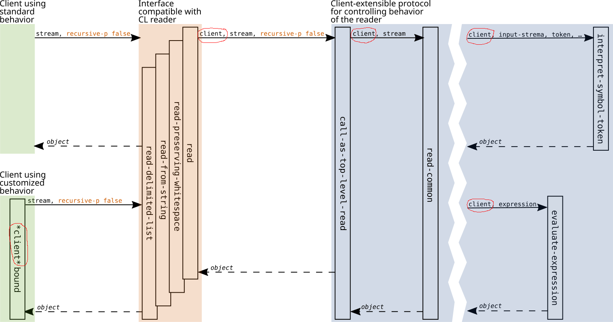
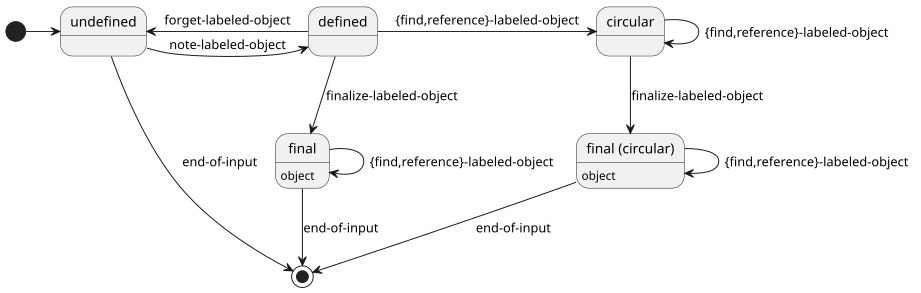
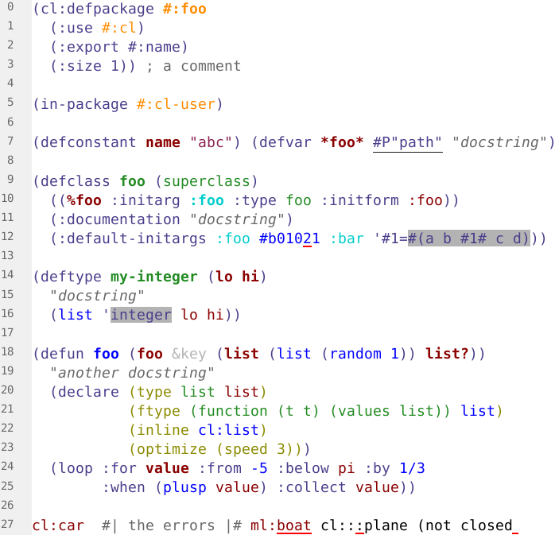

The Common Lisp reader
cl:read, special variables, readtable,
reader macrosOther uses cases for a reader add new requirements:
Create a reader library that
Eclector is a portable Common Lisp reader library
eclector ⟶ alexandria, acclimation, closer-mopeclector-concrete-syntax-tree ⟶ concrete-syntax-treeeclector.syntax-extensions ⟶ no external dependenciestexinfo-based reference manualAt the character level, there are many possible ways of violating the specified Common Lisp syntax:
(1 2 3 While reading list, expected the character ) when input ended. ⟝ ECLECTOR.READER:UNTERMINATED-LIST::A symbol token must not start with two package markers as in ::name.foo ⟝ ECLECTOR.READER:TWO-PACKAGE-MARKERS-MUST-NOT-BE-FIRST#\HyperUnrecognized character name: "Hyper" ⟝ ECLECTOR.READTABLE:UNKNOWN-MACRO-SUB-CHARACTER#10R89bThe character b is not a digit in base 10.76 ⟝ ECLECTOR.READER:DIGIT-EXPECTED`(:foo ,)An object must follow a unquote. ⟝ ECLECTOR.READER:OBJECT-MUST-FOLLOW-UNQUOTE
To produce good error messages for as many of those as possible,
Eclector can detect around
115
specific kinds of syntax errors for which it is has corresponding
condition types.
Applications like editors, IDEs and static analyzers must incorrect and incomplete source code:
(defun foo (x y) (+ x #b002The character 2 is not a digit in base 2.0101 (code-char #\RetrnUnrecognized character name: "Retrn") Avoid tab.'(,Unquote not inside backquote.(frob::barDo not use unexported symbols. y)) #1Reference to undefined label #1#.#) While reading list, expected the character ) when input ended.
The restart and function eclector.reader:recover can be
used to recover and continue reading after (hopefully) all syntax
errors:
(handler-bind ((error (lambda (condition)
(let ((restart (find-restart 'eclector.reader:recover)))
(format t "Recovering from~20T~A~%Using~20T~A~2%"
condition restart))
(eclector.reader:recover))))
(print (eclector.reader:read-from-string "`(::foo ,)")))
Recovering from A symbol token must not start with two package markers as in ::name. Using Treat the character as if it had been escaped. Recovering from An object must follow a unquote. Using Use NIL in place of the missing object. (ECLECTOR.READER:QUASIQUOTE (:FOO (ECLECTOR.READER:UNQUOTE NIL)))
(let ((client (make-instance 'eclector.parse-result.test::list-result-clientDo not use unexported symbols.)))
(eclector.parse-result:read-from-string client "(1 #|foo|# \"foo\" 2)"))
Consider an input with some skipped material:
;; foo bar (#+bar baz 1 :foo)
Resulting parse results (concrete syntax tree):
#<SEMICOLON-COMMENT-WAD abs:0[0],0 -> 1,0>
├─#<WORD-WAD rel:0[0],3 -> 0,6>
└─#<WORD-WAD rel:0[0],7 -> 0,10>
#<CONS-WAD-WITH-EXTRA-CHILDREN abs:1[1],0 -> 1,18>
├─#<SKIPPED-POSITIVE-CONDITIONAL-WAD rel:0[1],1 -> 0,10>
│ ├─#<ATOM-WAD-WITH-EXTRA-CHILDREN rel:0[1],3 -> 0,6 raw: #<INCREMENTALIST:EXISTING-SYMBOL-TOKEN [#1=KEYWORD]BAR {120AF8F753}>>
│ │ └─#<WORD-WAD rel:0[1],3 -> 0,6>
│ └─#<READ-SUPPRESS-WAD rel:0[1],7 -> 0,10>
├─#<ATOM-WAD rel:0[1],11 -> 0,12 raw: 1>
├─#<ATOM-WAD-WITH-EXTRA-CHILDREN rel:0[1],13 -> 0,17 raw: #<INCREMENTALIST:EXISTING-SYMBOL-TOKEN [#1#]:FOO {120BF8F6E3}>>
│ ├─#<PUNCTUATION-WAD rel:0[1],13 -> 0,14>
│ └─#<WORD-WAD rel:0[1],14 -> 0,17>
└─#<ERROR-WAD rel:0[1],11 -> 0,12 condition: INVALID-SYNTAX-ERROR>
The example uses the incrementalist incremental parsing library which is based on Eclector and the technique described in I. A. Durand and R. Strandh. (2018) Incremental Parsing of Common Lisp Code.
Operations performed by the reader are expressed as protocols in which generic functions accept a client parameter:

Protocols control the behavior of the reader, including aspects that are not customizable with standard Common Lisp readers. Examples:
Handling of whitespace and skipped material
(defgeneric eclector.reader:read-maybe-nothing (client input-stream eof-error-p eof-value)) (defgeneric eclector.reader:note-skipped-input (client input-stream reason))
Interpretation of tokens and in particular symbols
(defgeneric eclector.reader:interpret-token (client input-stream token escape-ranges)) (defgeneric eclector.reader:interpret-symbol-token (client input-stream token package-marker-1 package-marker-2))
Read-time evaluation
(defgeneric eclector.reader:evaluate-feature-expression
(client feature-expression))
Allows clients to control aspects of the reader state
Examples of reader state aspects:
cl:*package*), current radix
(cl:*read-base*)cl:*readtable*)Example of generic functions in the reader state protocol:
(defgeneric eclector.reader:state-value (client aspect)) (defgeneric (setf eclector.reader:state-value) (new-value client aspect))
Use cases
The labeled objects protocol controls the processing of labeled
object definitions (#1=…) and references
(#1Reference to undefined label #1#.#). It consists of two parts:
A state machine for labeled objects


| Reader | enc-cn-tbl.lisp | screamer.lisp |
|---|---|---|
| SBCL native | 0.034 s | 0.011 s |
| SBCL Eclector | 0.161 s | 0.052 s |
| SBCL Eclector CST | 0.475 s | 0.096 s |
| CCL native | 0.186 s | 0.047 s |
| CCL Eclector | 1.249 s | 0.607 s |
| CCL Eclector CST | 4.108 s | 0.961 s |
| ECL native | 0.118 s | 0.045 s |
| ECL Eclector | 1.500 s | 0.450 s |
| ECL Eclector CST | 7.000 s | 1.000 s |
Versions: flexi-streams-20241012-git, screamer-20210807-git
::(EXPRESSION)) ✅#2; SKIPPED₁ SKIPPED₂ EXPRESSION …) ✅1.234R2)1_000_000)#H(:test …)(key₁ value₁ …), #{key₁ value₁ …})Eclector Resources
#sicl and #commonlispscymtym and Robert Strandh is beach